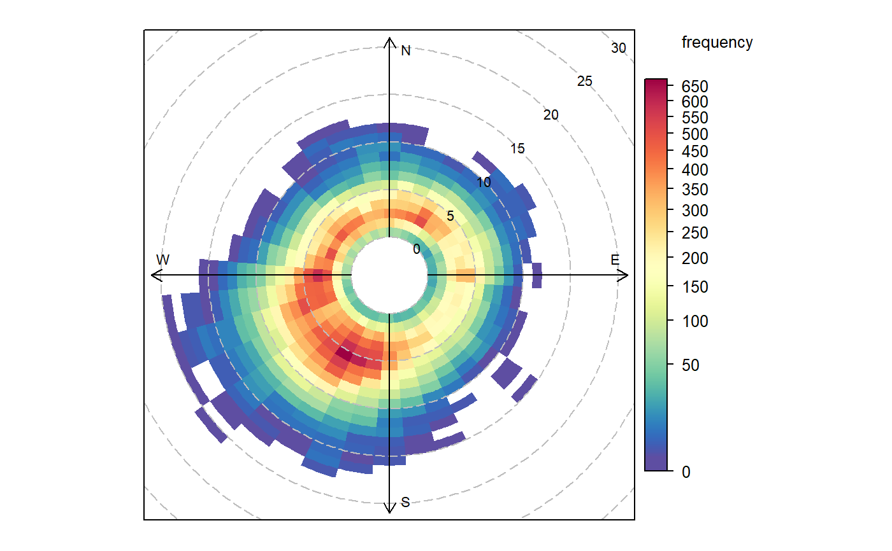

R/polarFreq.R
polarFreq.RdpolarFreq primarily plots wind speed-direction frequencies in
‘bins’. Each bin is colour-coded depending on the frequency of
measurements. Bins can also be used to show the concentration of pollutants
using a range of commonly used statistics.
polarFreq( mydata, pollutant = "", statistic = "frequency", ws.int = 1, wd.nint = 36, grid.line = 5, breaks = seq(0, 5000, 500), cols = "default", trans = TRUE, type = "default", min.bin = 1, ws.upper = NA, offset = 10, border.col = "transparent", key.header = statistic, key.footer = pollutant, key.position = "right", key = TRUE, auto.text = TRUE, ... )
| mydata | A data frame minimally containing |
|---|---|
| pollutant | Mandatory. A pollutant name corresponding to a variable in
a data frame should be supplied e.g. |
| statistic | The statistic that should be applied to each wind
speed/direction bin. Can be “frequency”, “mean”,
“median”, “max” (maximum), “stdev” (standard
deviation) or “weighted.mean”. The option
“frequency” (the default) is the simplest and plots the
frequency of wind speed/direction in different bins. The scale
therefore shows the counts in each bin. The option “mean”
will plot the mean concentration of a pollutant (see next point)
in wind speed/direction bins, and so on. Finally,
“weighted.mean” will plot the concentration of a pollutant
weighted by wind speed/direction. Each segment therefore provides
the percentage overall contribution to the total concentration.
More information is given in the examples. Note that for options
other than “frequency”, it is necessary to also provide the
name of a pollutant. See function |
| ws.int | Wind speed interval assumed. In some cases e.g. a low met mast, an interval of 0.5 may be more appropriate. |
| wd.nint | Number of intervals of wind direction. |
| grid.line | Radial spacing of grid lines. |
| breaks | The user can provide their own scale. |
| cols | Colours to be used for plotting. Options include
“default”, “increment”, “heat”, “jet”
and |
| trans | Should a transformation be applied? Sometimes when producing
plots of this kind they can be dominated by a few high points. The
default therefore is |
| type |
It is also possible to choose Type can be up length two e.g. |
| min.bin | The minimum number of points allowed in a wind speed/wind
direction bin. The default is 1. A value of two requires at least 2
valid records in each bin an so on; bins with less than 2 valid records
are set to NA. Care should be taken when using a value > 1 because of the
risk of removing real data points. It is recommended to consider your
data with care. Also, the |
| ws.upper | A user-defined upper wind speed to use. This is useful for
ensuring a consistent scale between different plots. For example, to
always ensure that wind speeds are displayed between 1-10, set
|
| offset |
|
| border.col | The colour of the boundary of each wind speed/direction bin. The default is transparent. Another useful choice sometimes is "white". |
| key.header, key.footer | Adds additional text/labels to the scale key.
For example, passing options |
| key.position | Location where the scale key is to plotted. Allowed
arguments currently include |
| key | Fine control of the scale key via |
| auto.text | Either |
| ... | Other graphical parameters passed onto |
As well as generating the plot itself, polarFreq also
returns an object of class “openair”. The object includes three main
components: call, the command used to generate the plot;
data, the data frame of summarised information used to make the
plot; and plot, the plot itself. If retained, e.g. using
output <- polarFreq(mydata, "nox"), this output can be used to
recover the data, reproduce or rework the original plot or undertake
further analysis.
An openair output can be manipulated using a number of generic operations,
including print, plot and summary.
polarFreq is its default use provides details of wind speed and
direction frequencies. In this respect it is similar to
windRose, but considers wind direction intervals of 10
degrees and a user-specified wind speed interval. The frequency of wind
speeds/directions formed by these ‘bins’ is represented on a colour
scale.
The polarFreq function is more flexible than either
windRose or polarPlot. It can, for example,
also consider pollutant concentrations (see examples below). Instead of the
number of data points in each bin, the concentration can be shown. Further,
a range of statistics can be used to describe each bin - see
statistic above. Plotting mean concentrations is useful for source
identification and is the same as polarPlot but without
smoothing, which may be preferable for some data. Plotting with
statistic = "weighted.mean" is particularly useful for understanding
the relative importance of different source contributions. For example,
high mean concentrations may be observed for high wind speed conditions,
but the weighted mean concentration may well show that the contribution to
overall concentrations is very low.
polarFreq also offers great flexibility with the scale used and the
user has fine control over both the range, interval and colour.
~put references to the literature/web site here ~
David Carslaw
# basic wind frequency plot polarFreq(mydata)  # wind frequencies by year if (FALSE) polarFreq(mydata, type = "year") # mean SO2 by year, showing only bins with at least 2 points if (FALSE) polarFreq(mydata, pollutant = "so2", type = "year", statistic = "mean", min.bin = 2) # weighted mean SO2 by year, showing only bins with at least 2 points if (FALSE) polarFreq(mydata, pollutant = "so2", type = "year", statistic = "weighted.mean", min.bin = 2) #windRose for just 2000 and 2003 with different colours if (FALSE) polarFreq(subset(mydata, format(date, "%Y") %in% c(2000, 2003)), type = "year", cols = "jet") # user defined breaks from 0-700 in intervals of 100 (note linear scale) if (FALSE) polarFreq(mydata, breaks = seq(0, 700, 100)) # more complicated user-defined breaks - useful for highlighting bins # with a certain number of data points if (FALSE) polarFreq(mydata, breaks = c(0, 10, 50, 100, 250, 500, 700)) # source contribution plot and use of offset option if (FALSE) polarFreq(mydata, pollutant = "pm25", statistic ="weighted.mean", offset = 50, ws.int = 25, trans = FALSE)